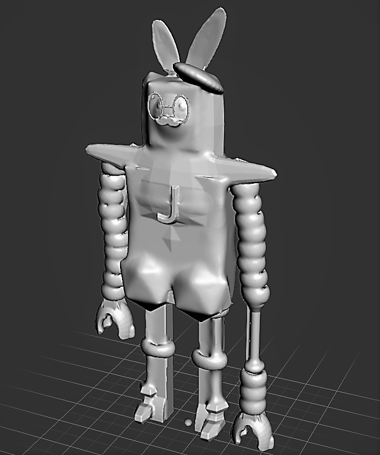

JACK THE RABBOT


This is Jack the RabBot. Inspired by my favorite cartoons, he’s a robot created in an attempt to seem more cozy and warm. He has a quirky personality and an expressionless face. His cute and funny outer appearance makes a great distraction for his real purpose. Initially created to be a weapon, Jack now uses his abilities to protect his adoptive family. His glasses are special designed to never fall off his face! They also shoot lasers. His left arm contracts and expands up to half a mile, which can up to an hour, depending on energy levels. His ears are actually antennas that can intercept radio waves from across the galaxies. He can even speak to aliens. He can also run as fast as 27 mph. Jack now successfully runs on battery power accessed through the “J” on his chest, in slight contrast to his previous energy source which was the blood of his enemies.